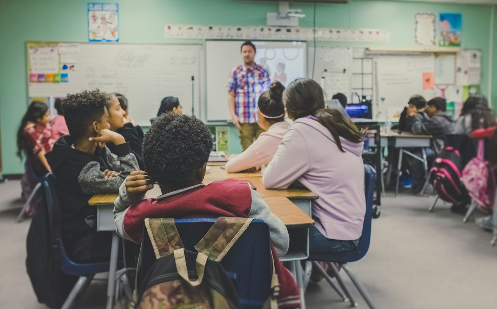

Projeto Futuro Brilhante
Público-alvo: Crianças e adolescentes de 6 a 15 anos.
Oferece reforço escolar, oficinas de leitura, raciocínio lógico e atividades culturais no período contraturno. Nosso objetivo é combater a evasão escolar e incentivar o desenvolvimento pleno dos alunos.
